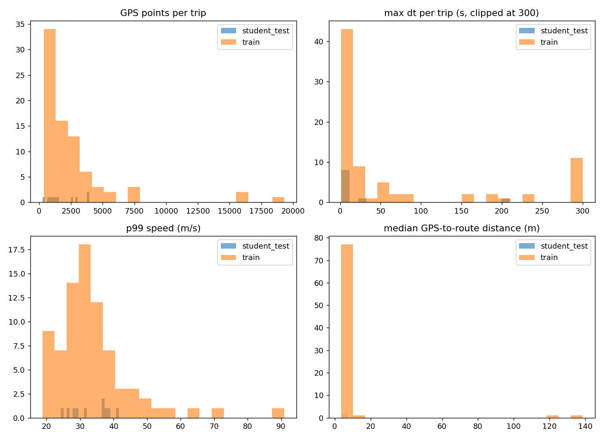
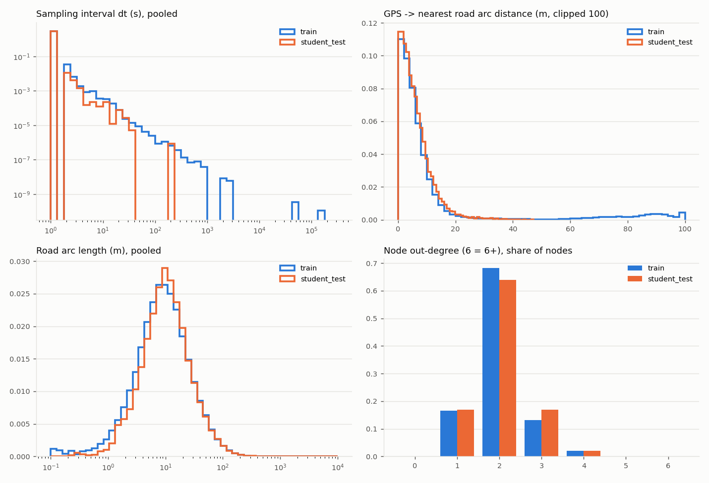
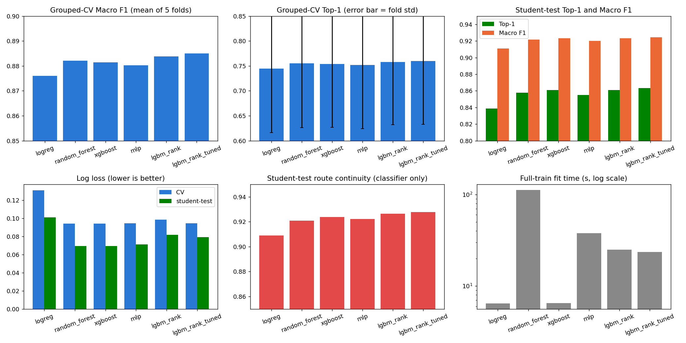
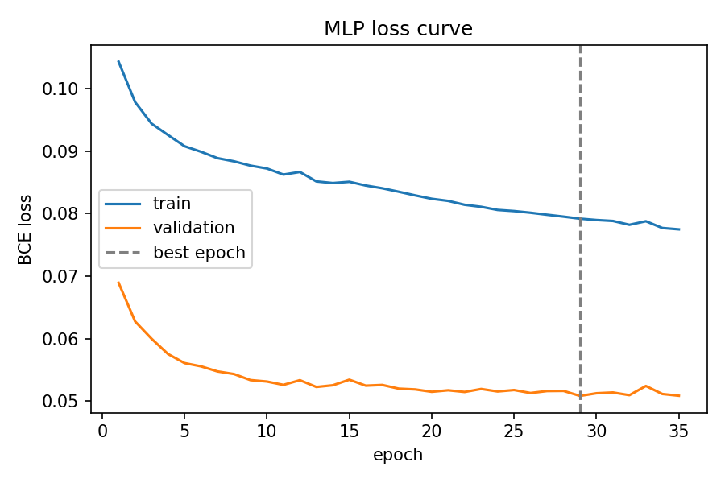
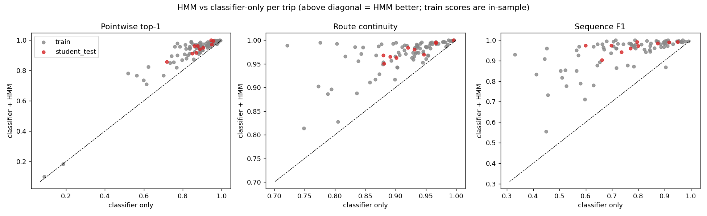

Every number below is read from files in results/ by python -m pathsnap.report. Partitions: train = 80 trips, student_test = 10 trips. Evaluator trips were never used for any analysis, training, selection or tuning.
pathsnap/io.py..route has no timestamps and about 5x fewer arcs than GPS points, so per-point labels come from a monotone dynamic-programming alignment of GPS points to route positions (labels.py), cut at GPS gaps over 60 s.features.py).GroupKFold on trip_id); scalers and imputers live inside pipelines and are fit on training folds only.| Finding | train | student_test |
|---|---|---|
| trips | 80 | 10 |
| GPS points | 208,417 | 19,160 |
| road arcs | 3,876,904 | 185,041 |
| route arcs | 31,336 | 3,477 |
| missing / invalid GPS values | 0 / 0 | 0 / 0 |
| trips with non-increasing timestamps | 0 | 0 |
| largest sampling gap (s) | 153,064 | 210 |
| trips with a gap over 60 s | 22 | 1 |
| trips whose route has unconnected consecutive arcs | 10 | 1 |
| mean share of GPS within 30 m of the route | 96.80% | 99.37% |
Notable trips: 054 (GPS far from every road) and 033 (GPS near roads but not near its route) disagree with their reference routes; they are kept in evaluation and reported openly. Details: results/eda/FINDINGS.md, notebooks/01_eda.ipynb, results/eda/01_eda.html.


Folium maps: results/viz/ (see section 6).
Primary selection metric: observation-level Top-1 on 5-fold trip-grouped CV over the 80 train trips (it is what the API scores). Ties inside fold noise are broken by log loss, then fit time. Student-test is a development check only. Candidate miss rate is a property of candidate generation: 0.13% of student-test observations have no true arc among the candidates, so Top-1 cannot reach 100%.
| Model | Family | Key configuration | CV Macro F1 | CV Top-1 | Route continuity (student-test, classifier only) | Student-test Macro F1 | Student-test Top-1 | Log loss (CV / test) | Inference (scoring, ms/obs) |
|---|---|---|---|---|---|---|---|---|---|
| Logistic Regression | linear | C=1, L2, lbfgs, standardised | 0.8760 +/- 0.043 | 0.7446 +/- 0.128 | 0.9088 | 0.9111 | 0.8389 | 0.1309 / 0.1009 | 0.0027 |
| Random Forest | bagging | 150 trees, depth 18, min leaf 20, max_samples 0.3 | 0.8821 +/- 0.043 | 0.7549 +/- 0.129 | 0.9207 | 0.9215 | 0.8577 | 0.0942 / 0.0695 | 0.0252 |
| XGBoost (GPU) | boosting | 600 trees max, depth 7, lr 0.05, early stop 40 | 0.8814 +/- 0.041 | 0.7535 +/- 0.126 | 0.9237 | 0.9233 | 0.8610 | 0.0939 / 0.0693 | 0.0057 |
| MLP (PyTorch, GPU) | neural | 128-64, dropout 0.1, AdamW lr 2e-3, AMP | 0.8803 +/- 0.042 | 0.7517 +/- 0.128 | 0.9221 | 0.9201 | 0.8551 | 0.0944 / 0.0713 | 0.0014 |
| LightGBM LambdaRank | ranking | 300 trees, 63 leaves, lr 0.05 (+Platt) | 0.8839 +/- 0.040 | 0.7577 +/- 0.126 | 0.9264 | 0.9234 | 0.8611 | 0.0986 / 0.0817 | 0.0297 |
| LightGBM LambdaRank (Optuna-tuned) | ranking | 374 trees, 49 leaves, lr 0.025 (+Platt) | 0.8850 +/- 0.041 | 0.7597 +/- 0.127 | 0.9278 | 0.9245 | 0.8632 | 0.0946 / 0.0792 | 0.0362 |
Notes: Macro F1 is computed over candidate rows after each observation marks its top-scoring candidate as the prediction. Log loss for the LambdaRank models is on the Platt-calibrated score. Route continuity is the share of consecutive predicted arcs that are equal or head-to-tail connected. Inference time is model scoring only (median of 5 runs over all student-test candidate rows (results/models/inference_benchmark.csv); single-shot timings first stored in each model JSON were taken while other jobs ran and are not used. End-to-end API time per trip is 2.8 s on average (section 7). The CV Top-1 std is large because one fold contains trip 054, where 89% of observations have no true candidate; per-fold paired differences (results/models/paired_folds.csv) are small by comparison.
Paired CV Top-1 improvement over logistic regression (same folds): Random Forest +0.0104; XGBoost (GPU) +0.0089; MLP (PyTorch, GPU) +0.0071; LightGBM LambdaRank +0.0131; LightGBM LambdaRank (Optuna-tuned) +0.0151. Folds (of 5) where each beats logistic regression: Random Forest 5, XGBoost (GPU) 5, MLP (PyTorch, GPU) 5, LightGBM LambdaRank 5, LightGBM LambdaRank (Optuna-tuned) 5.
A. Understanding. Interpretable linear baseline. If the engineered features carry the signal, a linear model should already rank candidates sensibly, and it gives probabilities for the HMM. Fast and stable, but cannot model interactions such as 'close but wrong heading'.
B. Training. Initial hyperparameters: {"C": 1.0, "penalty": "l2", "solver": "lbfgs", "max_iter": 500}. Objective: binary cross-entropy (L2-regularised).
C. Results. Student-test: Top-1 0.8389, Macro F1 0.9111, log loss 0.1009, precision 0.8389, recall 0.8399, route continuity 0.9088. CV Top-1 0.7446; train (resubstitution) Top-1 0.7421, so the train-minus-CV gap is -0.0025 (no sign of overfitting).
A. Understanding. Bagged trees capture non-linear interactions between distance, heading and rank features without much tuning. Robust, but the slowest to train and score here and the largest artifact (72 MB, not committed).
B. Training. Initial hyperparameters: {"n_estimators": 150, "max_depth": 18, "min_samples_leaf": 20, "max_features": "sqrt", "max_samples": 0.3, "n_jobs": 6}. Objective: Gini impurity splits.
C. Results. Student-test: Top-1 0.8577, Macro F1 0.9215, log loss 0.0695, precision 0.8577, recall 0.8587, route continuity 0.9207. CV Top-1 0.7549; train (resubstitution) Top-1 0.7739, so the train-minus-CV gap is +0.0189 (a modest gap: the model fits train better than held-out trips, mild overfitting) while student-test is still higher than CV because student-test is cleaner than the worst train trips.
A. Understanding. Gradient boosting is the strongest general tabular learner, runs on the GPU and trains in seconds on 1.8M candidate rows. Very fast and well calibrated; its train-minus-CV gap is the largest among the classifiers (mild overfitting even with early stopping).
B. Training. Initial hyperparameters: {"n_estimators": 600, "learning_rate": 0.05, "max_depth": 7, "min_child_weight": 5, "subsample": 0.8, "colsample_bytree": 0.8, "reg_lambda": 1.0, "max_bin": 128, "early_stopping_rounds": 40, "val_frac": 0.1}. Objective: binary:logistic (log loss) with early stopping.
C. Results. Student-test: Top-1 0.8610, Macro F1 0.9233, log loss 0.0693, precision 0.8610, recall 0.8621, route continuity 0.9237. CV Top-1 0.7535; train (resubstitution) Top-1 0.7851, so the train-minus-CV gap is +0.0316 (a modest gap: the model fits train better than held-out trips, mild overfitting) while student-test is still higher than CV because student-test is cleaner than the worst train trips.
A. Understanding. A different family (learned non-linear representation) to test whether a neural network adds anything over trees on 22 engineered features. It is also the only model with an epoch-wise training history. Needs scaling and tuning; slower than boosting and not better here.
B. Training. Initial hyperparameters: {"hidden": [128, 64], "dropout": 0.1, "lr": 0.002, "weight_decay": 0.0001, "batch_size": 8192, "max_epochs": 60, "patience": 6, "val_frac": 0.1, "amp": true, "seed": 42}. Objective: binary cross-entropy (BCE-with-logits), AdamW, early stopping.
C. Results. Student-test: Top-1 0.8551, Macro F1 0.9201, log loss 0.0713, precision 0.8551, recall 0.8562, route continuity 0.9221. CV Top-1 0.7517; train (resubstitution) Top-1 0.7714, so the train-minus-CV gap is +0.0198 (a modest gap: the model fits train better than held-out trips, mild overfitting) while student-test is still higher than CV because student-test is cleaner than the worst train trips.
A. Understanding. The task is choosing one candidate per observation, so a ranking objective optimises the quantity we are scored on (per-observation Top-1) directly. Best Top-1, but raw scores are not probabilities; we Platt-calibrate them for the HMM, which is slightly worse calibrated than the classifiers.
B. Training. Initial hyperparameters: {"n_estimators": 300, "learning_rate": 0.05, "num_leaves": 63, "min_child_samples": 50, "subsample": 0.5, "subsample_freq": 1, "colsample_bytree": 0.8, "n_jobs": 6}. Objective: LambdaRank (pairwise NDCG-weighted ranking loss, one group per observation).
C. Results. Student-test: Top-1 0.8611, Macro F1 0.9234, log loss 0.0817, precision 0.8611, recall 0.8622, route continuity 0.9264. CV Top-1 0.7577; train (resubstitution) Top-1 0.8210, so the train-minus-CV gap is +0.0633 (a modest gap: the model fits train better than held-out trips, mild overfitting) while student-test is still higher than CV because student-test is cleaner than the worst train trips.
The MLP's best epoch was 29 (early stopping on a held-out tail); its real training/validation loss curve is results/models/mlp_loss_curve.png. Other models do not produce epoch-wise histories, so no curves are shown for them.


results/models/comparison_plots.png: CV Macro F1, CV Top-1, student-test Top-1/Macro F1, log loss, route continuity, fit time for all models.results/models/mlp_loss_curve.png: MLP epoch-wise loss.results/hmm/final/hmm_vs_classifier.png: classifier-only vs HMM per trip.Chosen because it had the best CV Top-1 and beat XGBoost on all 5 folds and Random Forest on 4.
1. Searched: num_leaves, learning_rate, n_estimators, min_child_samples, subsample, colsample_bytree, reg_lambda.
2. Ranges: num_leaves int [15, 127]; learning_rate log [0.02, 0.2]; n_estimators int [100, 500]; min_child_samples int [10, 200]; subsample float [0.4, 1.0]; colsample_bytree float [0.5, 1.0]; reg_lambda log [0.001, 10.0].
3. Objective: mean grouped-CV top-1 (5 folds, 80 train trips); sampler TPE (seed 42), median pruner.
4. Trials: 20 (20 complete, 0 pruned), 31 minutes. Trial log: results/tuning/lgbm_rank_trials.csv.
5. Best: {"num_leaves": 49, "learning_rate": 0.025043908574120786, "n_estimators": 374, "min_child_samples": 94, "subsample": 0.47322294090686734, "colsample_bytree": 0.7475884550556351, "reg_lambda": 0.0013726318898045872}.
6. Tuned vs untuned (identical folds and data):
| CV Macro F1 | CV Top-1 | Student Top-1 | Student Macro F1 | Log loss (CV / test) | Inference ms/obs | |
|---|---|---|---|---|---|---|
| untuned | 0.8839 | 0.7577 | 0.8611 | 0.9234 | 0.0986 / 0.0817 | 0.0297 |
| tuned | 0.8850 | 0.7597 | 0.8632 | 0.9245 | 0.0946 / 0.0792 | 0.0362 |
The tuned model is better on 4 of 5 folds, but the gain is small (+0.0020 CV Top-1); we report it as a marginal improvement, not a large one. It is adopted as the final model (artifacts/final_model.joblib). Cost: 31 min for the search.

w_emis, w_dist, sigma 20 m), floored at 1e-6.max_pen), so a bad link can be crossed when evidence is strong.| Classifier only | Classifier + HMM | |
|---|---|---|
| Top-1 (student-test) | 0.8821 | 0.9464 |
| Route continuity (student-test) | 0.9278 | 0.9769 |
| Sequence F1 (student-test) | 0.7796 | 0.9680 |
| Precision (student-test) | 0.6560 | 0.9480 |
| Top-1 (train, out-of-fold) | 0.8488 | 0.9193 |
| Sequence F1 (train, out-of-fold) | 0.7551 | 0.9408 |
Sequence F1 compares the set of predicted arcs (gaps filled by shortest path) with the reference route arcs. The HMM lowers Top-1 on 0 student-test trips and 1 train trip(s) (listed in results/hmm/final/comparison.csv). Decoding takes 0.24 s per trip on average (1.4 s at most). Caveat: the decoder parameters were tuned on these same 90 trips, so the gain is slightly optimistic; the evaluator trips are the unbiased check.
results/viz/00000001.html: GPS (blue), road network (grey), reference route (green) with gaps, spikes, off-route points and route breaks as layers.results/viz/hmm_compare*.html: student-test trip with GPS, reference, classifier-only and HMM routes. results/viz/world_trips.html: all trips by location.src/pathsnap/viz.py, viz_pred.py. Maps use Esri tiles because OSM blocks pages opened from disk. Add a screenshot of one map to the PDF.Endpoints GET /health, GET /trips, POST /predict/{trip_id}; the UI lists the trips, runs one or all and shows the predicted route and metrics. Reference data never leaves the server. Setup: docs/DEPLOYMENT.md, docs/HANDOFF.md.
Smoke test (student-test trips through the running API, results/api_smoke_test.csv):
| Trip | OK | Latency (s) | Top-1 | Route continuity |
|---|---|---|---|---|
| 00000000 | True | 2.9 | 0.9525 | 0.8718 |
| 00000007 | True | 2.3 | 0.8501 | 0.9918 |
| 00000009 | True | 2.5 | 0.8894 | 0.7937 |
| 00000040 | True | 3.0 | 0.9332 | 0.8899 |
| 00000052 | True | 2.1 | 0.9771 | 0.8608 |
| 00000056 | True | 3.5 | 0.9482 | 0.8627 |
| 00000065 | True | 2.4 | 0.8841 | 0.8409 |
| 00000076 | True | 3.2 | 0.8964 | 0.7473 |
| 00000077 | True | 3.3 | 0.7967 | 0.7180 |
| 00000091 | True | 2.5 | 0.9108 | 0.7960 |
To add by the team: screenshots of the working UI and of the API console on the receiving laptop (required by the guidelines), and the final run on the evaluator trips.
Model and decoder were frozen before this run; it was executed once through the API and reported as is (results/evaluator_run.csv). The API's route continuity is computed on the decoded arcs per observation without gap filling, so it is lower than the gap-filled continuity quoted in section 5.
| Trip | OK | Latency (s) | Top-1 | Route continuity | GPS points |
|---|---|---|---|---|---|
| 00000015 | True | 0.97 | 0.8710 | 0.6497 | 6854 |
| 00000017 | True | 0.90 | 0.9532 | 0.7259 | 1346 |
| 00000023 | True | 0.20 | 0.9454 | 0.8305 | 458 |
| 00000030 | True | 0.35 | 0.8853 | 0.7241 | 654 |
| 00000049 | True | 0.79 | 0.9962 | 0.9618 | 2642 |
| 00000059 | True | 0.49 | 0.9767 | 0.7910 | 1031 |
| 00000067 | True | 0.17 | 0.9672 | 0.8784 | 916 |
| 00000073 | True | 0.36 | 0.9808 | 0.9359 | 1144 |
| 00000087 | True | 0.90 | 0.9943 | 0.9658 | 1399 |
| 00000094 | True | 0.83 | 0.9492 | 0.8152 | 3230 |
| Mean | 10/10 | 0.60 | 0.9519 | 0.8278 |